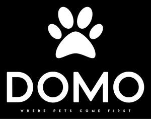

Trade Mark Journal No.2025/015 11 April 2025
UK00004178696 25 March 2025 (3,16,18,20,21,27,28,31,44)

- Class 3
- Pet shampoos; Pet odor removers; Non-medicated pet shampoos.
- Class 16
- Scratch pads; Paper pet crate mats; Corrugated board; Cartons made from corrugated board; Plastic bags for pet waste disposal.
- Class 18
- Raincoats for pet dogs; Collars for pets; Pet clothing; Feed bags for animals; Pet leads; Animal leashes; Cat collars; Dog leads; Dog leashes; Animal leads; Dog collars; Dog clothing; Dog shoes; Leads for animals; Dog coats; Dog apparel; Dog bellybands; Dog parkas; Training leads for horses; Dog waste bag dispensers adapted for use with leashes; Clothing for dogs; Rawhide chews for dogs; Electronic pet collars; Leashes for animals; Coats for dogs; Collars for cats.
- Class 20
- Pet houses; Pet crates; Pet grooming tables; Pet furniture; Pet cushions; Cushions (Pet -); Kennels for household pets; Barrels (Non-metallic -) for the identification of pet animals; Nesting boxes for pets; Dog kennels; Dog houses [kennels]; Nesting boxes for household pets; Household pets (Nesting boxes for -); Grooming tables for pets; Dog baskets; Dog tags, not of metal; Dog beds; Non-metal dog tags; Dispensers, not of metal, for dog waste bags; Cat beds; Cat trees; Cat baskets; Scratching posts for cats.
- Class 21
- Pet feeding bowls; Bird feeders; Pet feeding dishes; Litter trays for pet animals; Small animal feeders; Litter scoops for use with pet animals; Pet feeding and drinking bowls; Food containers for pet animals; Brushes for grooming pet animals; Trays (Litter -) for pets; Litter trays for pets; Cages for household pets; Pet drinking bowls; Litter boxes for pets; Litter boxes [trays] for pets; Pet grooming glove; Raccoon dog hair for brushes; Brushes for grooming horses; Deshedding brushes for pets; Animal grooming gloves; Shaving brushes of badger hair; Brushes for pets; Fur brushes for animals; Deshedding combs for pets; Shaving brushes; Hair for brushes; Hair brushes; Pet paw cleaners, non-electric; Shampoo brushes; Mane brushes; Brushes for cleaning; Cleaning brushes; Cat litter pans; Lawn brushes; Pet lick mats; Bottle cleaning brushes; Pet feeding bowls, automatic; Cat litter boxes; Dog food scoops.
- Class 27
- Pet feeding mats.
- Class 28
- Toys for pet animals; Pet toys; Toys and playthings for pet animals; Pet toys containing catnip; Toys, games and playthings for pet animals; Toys for domestic pets; Dog toys; Toy dogs; Toys for dogs; Pet toys made of rope; Snuffle mats being dog toys; Imitation bones being toys for dogs.
- Class 31
- Pet birds; Pet food for birds; Pet animals; Pet food for dogs; Pet food; Food (Pet -); Pet rabbit food; Pet foods; Foodstuffs for pet animals; Pet foodstuffs; Animal litter for cats; Pet beverages; Sand for pet toilets; Edible pet treats; Animal feed; Pet foods in the form of chews; Breeder birds; Foods containing chicken for feeding cats; Edible silvervine powder for pet cats; Cat litter and litter for small animals; Cat food; Animal litter; Bird food; Food for cats; Litter for birds; Fish meal [animal feed]; Dog food; Foods containing chicken for feeding dogs; Foods flavoured with chicken for feeding cats; Cat litter; Litter for cats; Dogs; Dog biscuits; Biscuits (Dog -); Litter for dogs; Food for dogs; Biscuits for dogs; Chewing bones for dogs; Bones for dogs; Digestible chewing bones for dogs; Food for racing dogs; Bark for use as animal litter; Foodstuff for dogs; Foods in the form of rings for feeding to dogs; Dog treats [edible]; Edible dog treats; Small animal litter; Edible chews for dogs.
- Class 44
- Pet grooming; Grooming (Pet -); Care of pet animals; Services for the care of pet birds; Services for the care of pet animals; Services for the care of pet fish; Grooming of pets; Pet grooming services; Grooming salon services for pet animals; Cat breeding services; Pet bathing services.
Domo Corporation Ltd